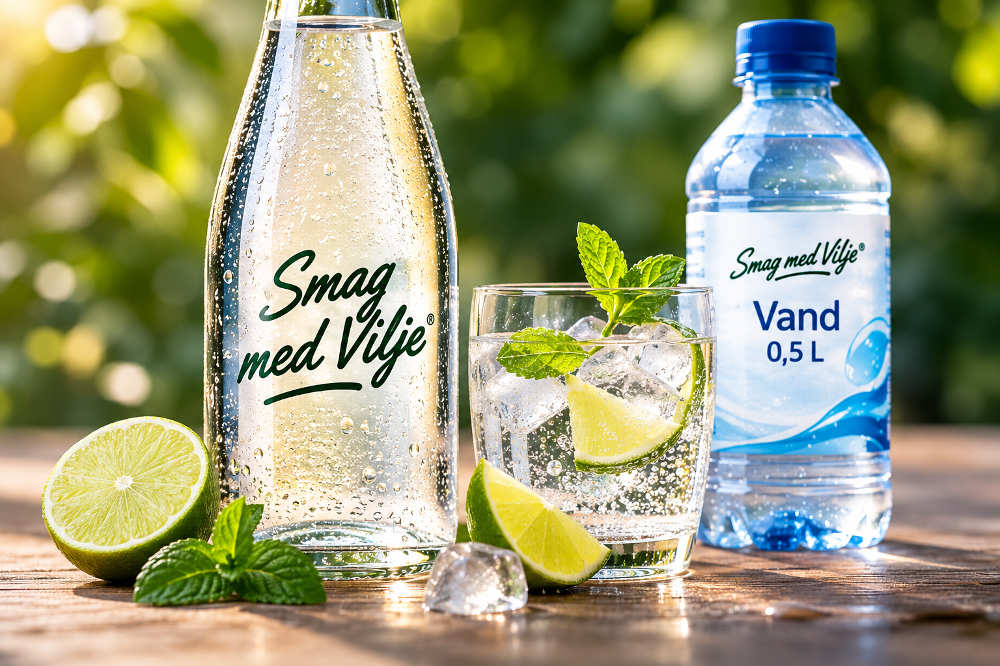
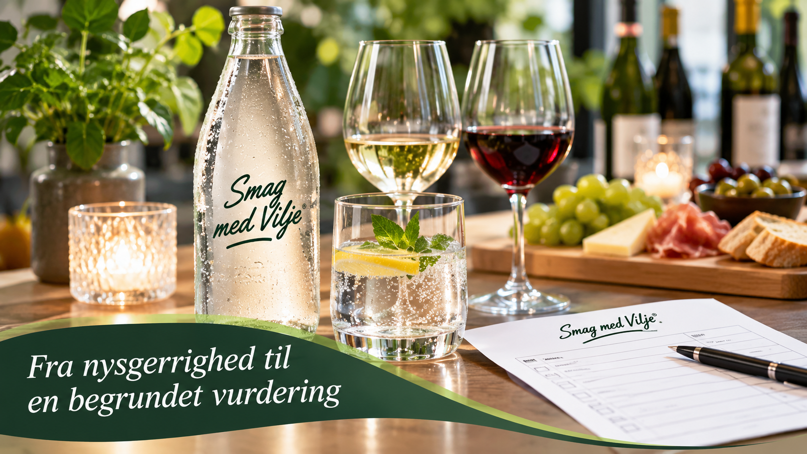

VIP Smag med Vilje
Structured tastings with selected customers and consumers. Taste, quality and preferences inform our decisions alongside price and market potential.
A beautiful photograph can spark curiosity. An interesting label can catch the eye. But neither can tell you what a product actually tastes like.
At Smag med Vilje, we believe taste should be experienced.
That is why we work with tastings, consumer tests and our VIP tasting panel, giving real people the opportunity to evaluate products.
We listen to their experiences and use the insights to select, improve and develop beverages.
For us, looking good is not enough. A product must taste good too.
We assess taste, quality, distinctiveness and potential among Danish customers. A great tasting experience matters, but we also consider price, the market and how a product fits our range.
We want to make well-considered decisions and learn from the feedback we receive along the way.

A selected panel of consumers and customers will help us evaluate new products before we decide whether they belong in our range.
Through structured tastings, the panel evaluates flavour, quality and preferences. The results give us valuable insights before we decide which products to pursue.
The panel’s feedback is one part of the decision, alongside our financial and commercial assessment.
Smag med Vilje is more than product selection. We want to explore new ideas, listen to consumers and develop beverages together with producers.
Structured tastings with selected customers and consumers. Taste, quality and preferences inform our decisions alongside price and market potential.
We plan to invite consumers to try and evaluate new products. Their feedback can help us understand what works in practice.
We follow emerging beverage trends and aim to refine products and create new concepts in dialogue with producers and customers.

Good flavours are better shared.
At Smag med Vilje, we want to do more than present and sell beverages. We aim to create experiences that spark curiosity, bring people together and introduce new flavours.
That is why we are planning wine and tasting evenings across our product universe – from wine and speciality drinks to flavoured water and new beverage concepts.
The events will be open to both private and professional customers and can be tailored to different audiences and occasions.
We believe in a different approach to our customers. Rather than simply telling people about products, we want them to experience them, form their own opinions and share their impressions with us.
This creates memorable experiences and gives us valuable insights to develop our range and discover new opportunities with our suppliers.
Want to know more? ↗Are you a producer curious about our approach? We would be happy to talk.
Contact us